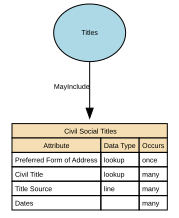

Civil Social Titles
Civil Social Titles are non‑professional, non‑noble honorifics used in everyday civil contexts to address or refer to individuals (e.g., Mr, Mrs, Miss, Ms, Mx). They facilitate respectful forms of address, correspondence, and identity presentation but do not indicate rank, role, or qualification.
Implements Concepts from Person Domain, Concept Model
| Concept | Description |
|---|---|
| Civil Social Titles | Civil Social Titles are non‑professional, non‑noble honorifics used in everyday civil contexts to address or refer to individuals (e.g., Mr, Mrs, Miss, Ms, Mx). They facilitate respectful forms of address, correspondence, and identity presentation but do not indicate rank, role, or qualification. |

Attributes
| Attribute | Description | Data type | Occurs |
|---|---|---|---|
| Preferred Form of Address | Preferred Form of Address captures how a person wishes to be addressed in communications, independent of legal name or formal titles. It reflects user preference, not legal identity. | lookup | once |
| Civil Title | Civil Social Titles are non‑professional, non‑noble honorifics used in everyday civil contexts to address or refer to individuals (e.g., Mr, Mrs, Miss, Ms, Mx). They facilitate respectful forms of address, correspondence, and identity presentation but do not indicate rank, role, or qualification. | lookup | many |
| Title Source | Title Source identifies where a person’s title comes from, i.e., the origin, authority, or method by which the title is recognised. It specifies whether the title: * is legally granted, * assigned by a professional body, * self‑declared, * organisationally assigned, * or derived from official documents. Title Source tells the system why this title exists and how it should be trusted, without conflating different types of titles. It is critical for determining verification, usage rights, display rules, and legal compliance. | line | many |
| Dates | Dates for Titles define the period of time during which a given title is valid, active, recognised, or in use for an individual. Titles may be permanent (e.g., “Sir”), fixed-term (e.g., elected roles), conditional (e.g., military rank), or time-limited (e.g., honorary fellowships). Temporal attributes allow organisations to manage title history, render names correctly, and respect changes in status, role, or personal preference. Typical date fields include: * effective_from — when the title became valid or was first adopted * effective_to — when the title ceased being valid or used (nullable if active) * capture_date — when the system recorded the title (optional) These dates apply per title record. | structure | many |